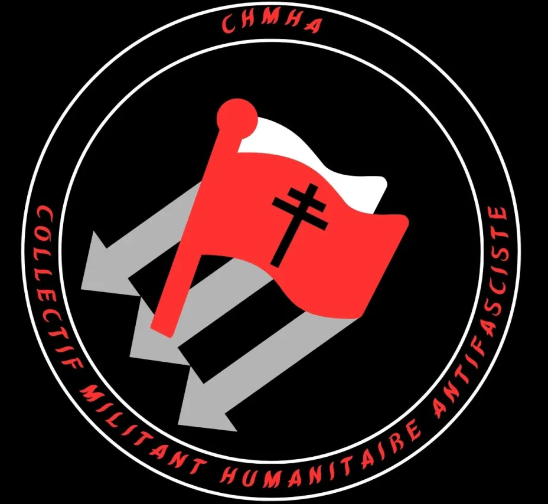
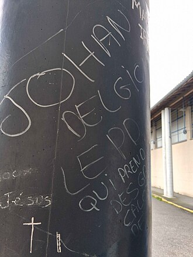
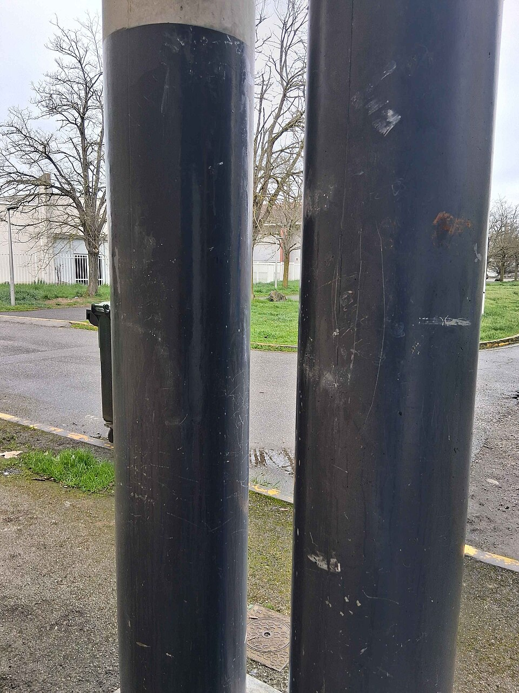
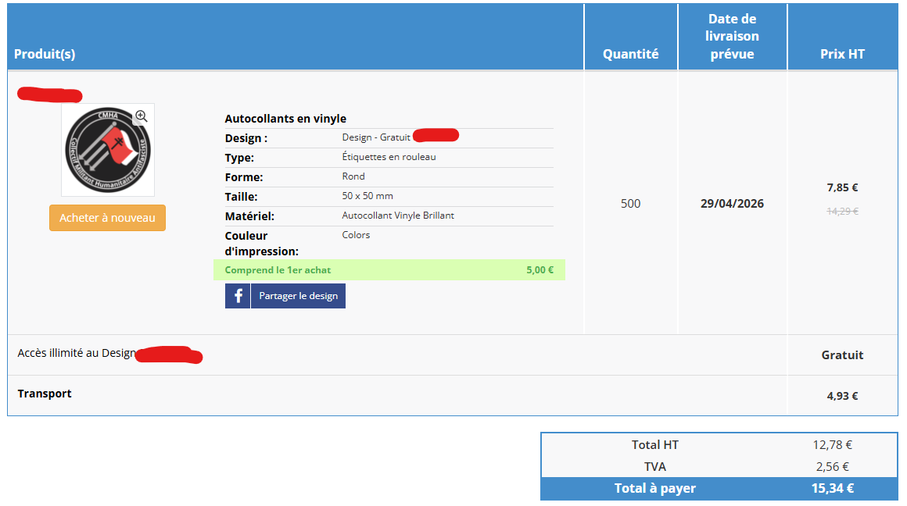
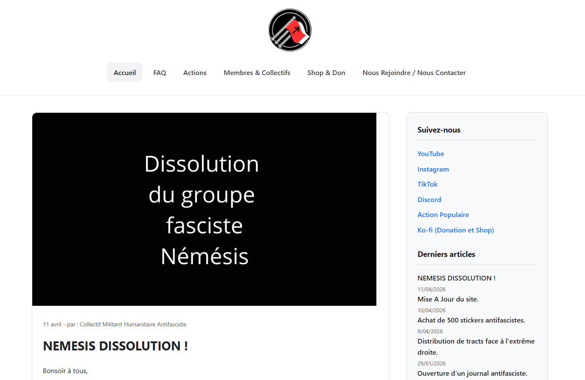
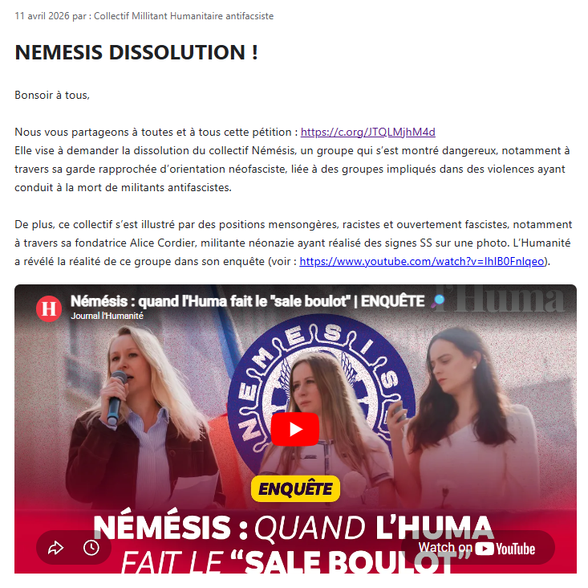

Collectif Militant Humanitaire Antifasciste
Le CMHA, ou Collectif Militant Humanitaire Antifasciste, est un collectif de gauche revendiquant l’humanisme comme valeur principale. Il s’est constitué en janvier 2026 à Colomiers, où il est principalement actif, et milite en faveur du programme L’Avenir en commun. Il est notamment présent sur la carte du site Action Populaire.
Il est connu pour ses actions populaires discrètes, notamment des distributions de tracts dénonçant l’extrême droite, ainsi que pour ses actions de nettoyage de graffitis racistes, xénophobes, LGBT‑phobes ou même antisémites dans plusieurs quartiers de Haute‑Garonne.
Sa description sur leur site internet est telle que :
"Le CMHA (ou Collectif Militant Humanitaire Antifasciste) est un collectif opérant en France (principalement en Haute-Garonne). Nous sommes une association de fait (soit un collectif idéologique militant pour le programme de l'avenir en commun). Il est né de la nécessité de combattre la montée de l'extrême droite par l'action concrète, la distribution d'informations et la solidarité directe avec les opprimés."
Historique
Fondation
Le Collectif Militant Humanitaire Antifasciste a été fondé en janvier 2026 par un groupe d’amis se reconnaissant dans la gauche et voyant un enjeu majeur dans la lutte contre le fascisme ainsi que dans la mise en avant des idées de gauche dans leur ville de Colomiers.
Son président actuel, Jordan (nom de famille anonyme), est le fondateur de ce collectif.
Évolution de leur logo

En février 2026, Jordan confectionne le premier logo du Collectif. On y retrouve la croix de Lorraine, symbole de résistance, les trois flèches, emblème typique des mouvements antifascistes, ainsi que le drapeau rouge et blanc antifasciste. Un « H » fut volontairement ajouté au nom « CMHA », car le collectif s’appelait auparavant Collectif Humanitaire Militant Humaniste Antifasciste (nom jugé trop long ; ils changèrent le nom du collectif quelques jours plus tard).
Le second logo, réalisé par leur membre graphiste Creisylle (pseudonyme), ne comporte plus l’inscription du nom du collectif. On y retrouve les symboles classiques du logo, comme les trois flèches, le drapeau et la croix de Lorraine, mais sous une forme stylisée ; par exemple, le manche du drapeau est l’une des trois flèches.
Actions en France

En janvier 2026, ils créent, après leur collectif, un journal antifasciste intitulé "Les Droitards con". Dans celui‑ci, ils dénoncent les actions de l’extrême droite dans le pays.
Le 29 janvier 2026, ils distribuent des tracts pour en faire la promotion et informer un maximum de personnes. Ils y dénoncent notamment :
« Depuis 2020, plusieurs associations alertent sur le caractère de ces partis de droite ! […] Au Parlement européen, le RN vote : contre la résolution sur les discours de haine envers les personnes LGBTI […] contre la résolution en faveur des droits des personnes LGBTI dans l’Union européenne […] ainsi que neuf autres résolutions depuis 2009 […] »
Selon les informations relayées sur leur Discord, environ 300 flyers ont pu être distribués dans les villes de Colomiers, Léguevin et Toulouse.
Dans la période de janvier à avril, le collectif s’engage dans des actions de porte‑à‑porte et de tractage piéton, lance des recrutements de masse et passe de trois à une dizaine de membres selon leur fondateur. Ils lancent également des opérations de nettoyage des rues, en effaçant les graffitis quels qu’ils soient (qu’ils soient simplement humoristiques ou fascistes). Ils développent aussi des activités sur les réseaux et alertent sur l’augmentation significative de l’apparition de symboles fascistes et nazis dans les rues de Colomiers.


Le 9 avril 2026, ils annoncent l’achat de 500 stickers en vinyle antifascistes (avec leurs logos dessus et une livraison prévue pour le 29 avril) dans l’objectif de les coller en Haute‑Garonne, ainsi que la sortie d’une boutique de stickers antifascistes commandables sur Ko‑fi.

Le 10 avril 2026, ils réalisent une refonte totale de leur site internet afin de mieux communiquer et annoncent le début de l’ouverture d’autres CMHA en France. Ils indiquent également la possibilité d’en créer un chez soi en les contactant.

Le 11 avril 2026, ils appellent à voter pour une pétition demandant la dissolution du collectif Némésis, lancée sur Change.org. Ils insistent sur le caractère néofasciste et raciste du groupe dans leur communiqué.
